档案 01｜一、路有多长
31年抢修路线
电力抢修常常发生在最不方便的时候：深夜、暴雨、寒潮、高温。张黎明在这样的现场干了31年。对用户来说，故障恢复不过是灯重新亮起的一瞬；对抢修员来说，那一瞬之前，往往要先找到那条最快的路。
他走遍辖区线路，画下1500多张抢修线路图，把杆塔位置、周边道路、交通条件都记在纸上，也记进脑子里。久而久之，哪里出故障、怎么绕最快、现场先看哪一处，他比导航更快。新华社和工人日报都提到，张黎明累计巡线8万多公里，完成故障抢修作业近2万次，被称为电力抢修“活地图”。
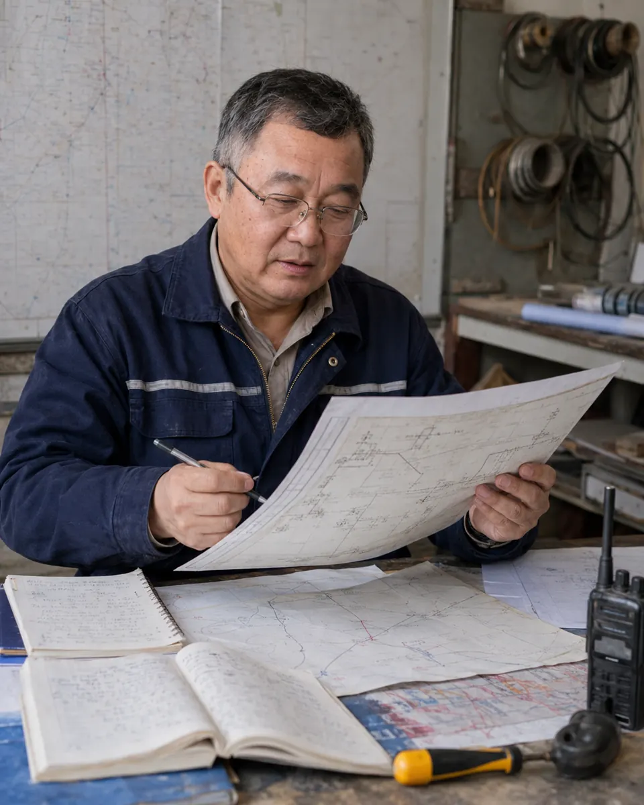
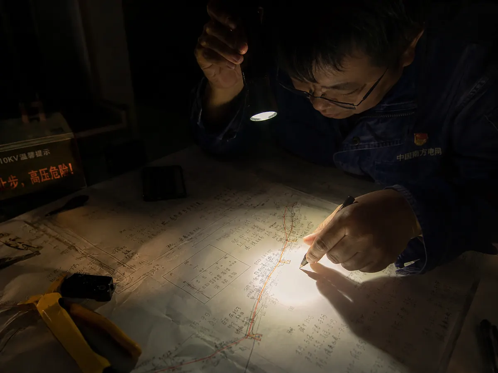
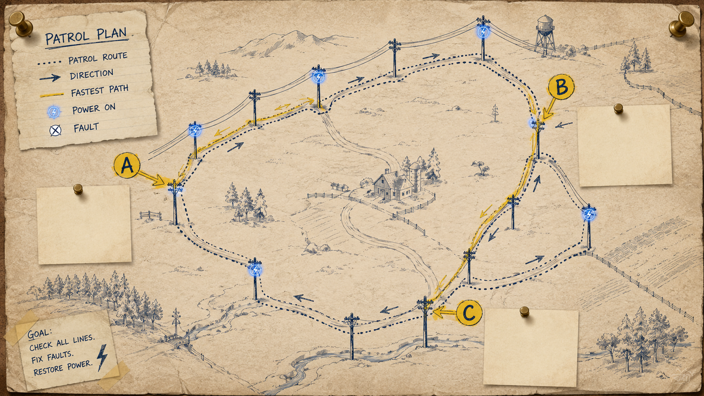
A点：夜间故障故障点、抢修路线与处理结果同步呈现。
杆塔位置
道路绕行
用户影响
先查节点
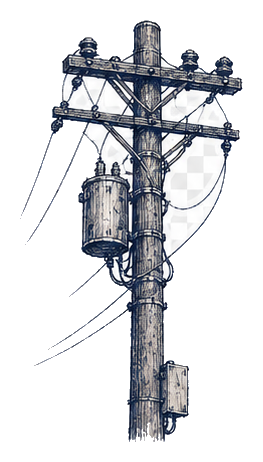
档案 02｜二、把时间省下来
从45分钟到8分钟
许多改造，并不是在实验室里先想出来的，而是在同一个问题反复出现之后，被现场一步步逼出来的。
以前，更换变压器保险，抢修人员要穿戴护具、登上台架，从停电、更换到恢复送电，整套流程走完大约要45分钟。为了安全，周边非故障线路也常常要一并停电。后来，张黎明把原来的固定式刀闸片改造成可摘取式，抢修人员不用再登高，站在地面上，用绝缘拉杆就能完成操作，前后只用8分钟。这不是把一个动作做快了，而是把整条处理链路改短了。仅这一项改造，每年就可创造300多万元经济效益。
45分钟→8分钟
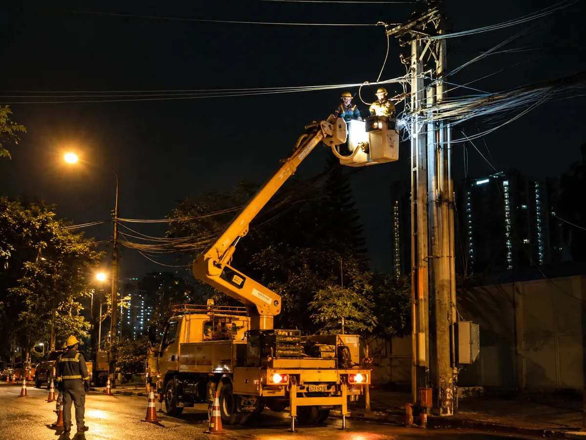
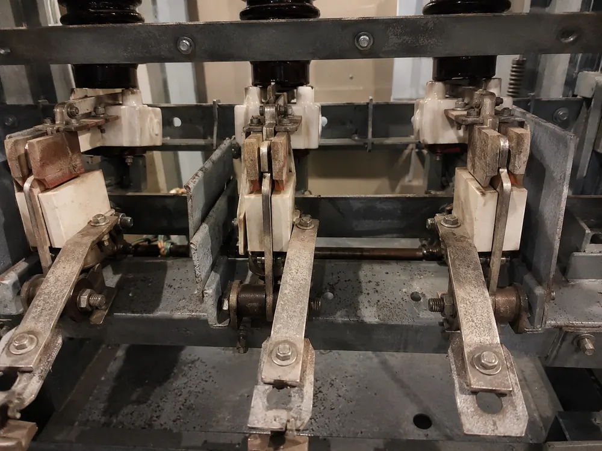
改造前
- 停电隔离
- 登高作业
- 更换保险
- 复核送电
改造后
- 地面操作
- 快速更换
- 复核送电
缩短约82.2%
一次改装解决的是一次抢修。真正让经验留下来的，是把零散的“好办法”，变成能复用、能传下去的方法库。
档案 03｜三、创新怎么长出来
从故障点到发明点
比一次抢修更难的，是把一次抢修里的经验留下来。张黎明做的，正是这件事。
遇到故障，他不是修完就算，而是把现场里暴露出来的问题一条条记下：什么情况下先判断哪里，哪类故障最容易误判，什么工具需要改，什么流程还能再短一点。长期下来，他和团队分析近万个故障，总结出50多个经典案例，形成涵盖30大类300多种故障抢修经验的《急修案例库》和《抢修百宝书》；在这套经验之上，又逐步做出了400余项技术革新，形成百余项国家专利，20余项成果填补智能电网建设空白。故障并没有停在现场，而是继续往前走，变成了图纸、案例、工具和方法。
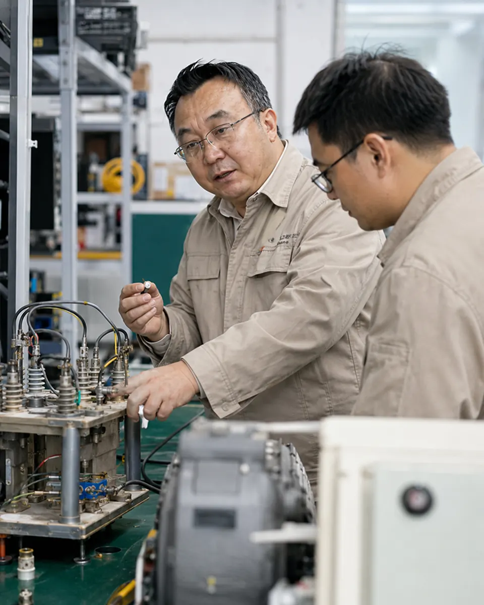
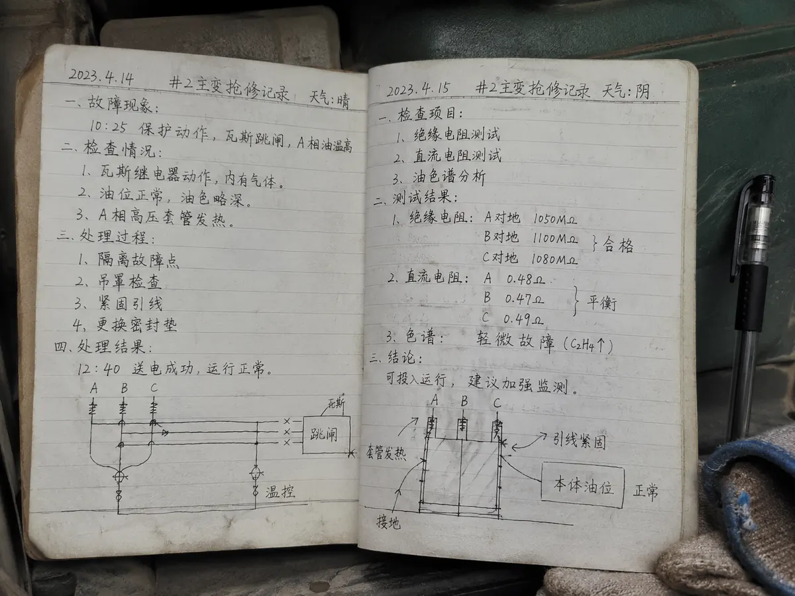
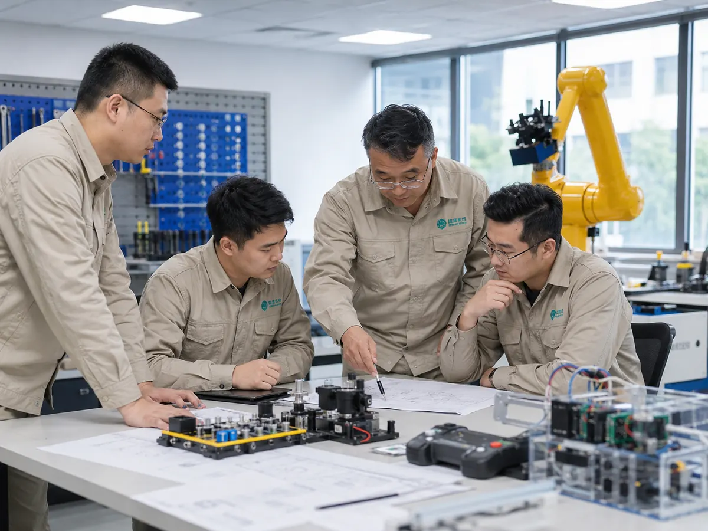
选择漏斗节点，查看经验如何变成果。
可摘取式低压刀闸
从45分钟压缩到8分钟，站在地面完成操作。
抢修知识沉淀
近万个故障分析，沉淀成案例库与百宝书。
当一把刀闸已经不能满足新的需求，问题就会继续往前走。下一步不再是“能不能更快”，而是“能不能让人不再上高处”。
档案 04｜四、把人从高处换回地面
机器人接过高危工序
更快之外，张黎明一直在想另一件事：能不能让工人少冒一点险。
带电作业危险、强度高，很多关键工序长期依赖高空人工完成。围绕这个问题，张黎明把多年抢修里积累下来的判断经验，转成了研发思路，去找绝缘、定位、视觉识别和远程控制这些环节里的突破口。后来，配网带电作业机器人从实验室一步步走向现场，从第一代迭代到第四代：更轻、更稳，也更适合复杂环境和狭小空间作业。机器人接过的，不只是一次高空动作，更是一部分原本必须由人去承担的风险。
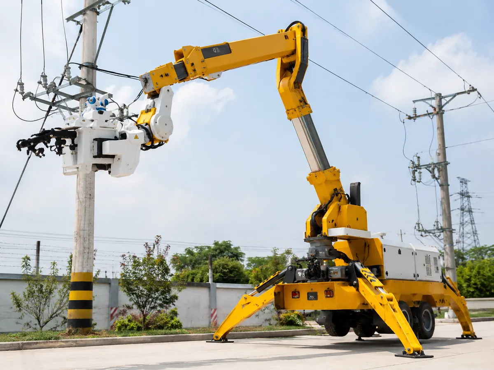
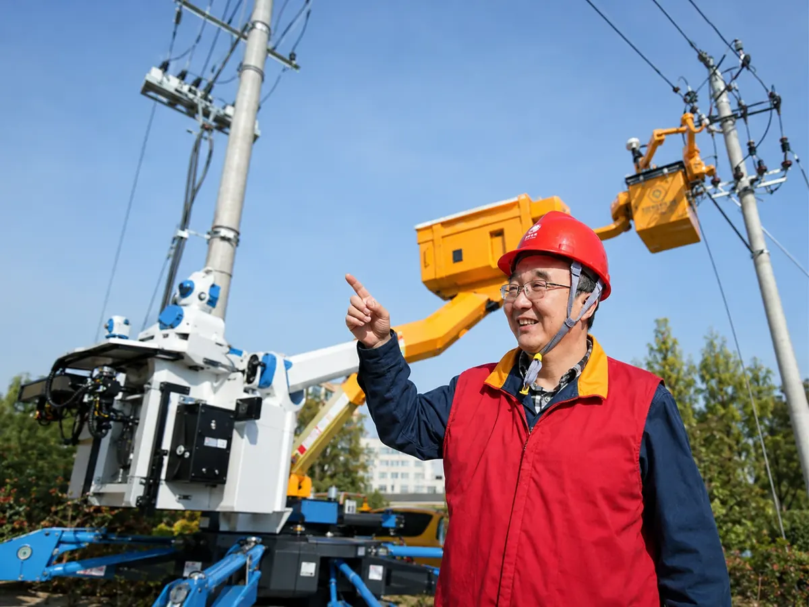
选择部件，查看它如何降低高空作业风险。
但张黎明的工作，并不只停在抢修现场。电亮起来以后，他还继续往社区里走。
档案 05｜五、光照到哪里
从抢修现场到社区楼道
如果说前面的路、图纸和工具，讲的是一个抢修工人怎样把问题解决得更快，那么这一部分讲的，就是他为什么还要继续往前走。
长期以来，张黎明和队员们为11个社区、150多位老弱孤残建立服务档案，开展志愿服务近万次。更具体、也更容易被人记住的是楼道里的那些灯。发现一些老旧小区楼道又黑又暗之后，他拿出道德模范奖金，发起“黎明·善小”微基金，推动“节能互助·照亮邻里”行动。从2016年启动开始，这项行动先后点亮了37栋老楼、148个“黑楼道”，让2000多户居民不必再摸黑上楼；后来，这束光还在继续往外扩展，公开报道更新口径已超过400个楼道、4000多户居民。
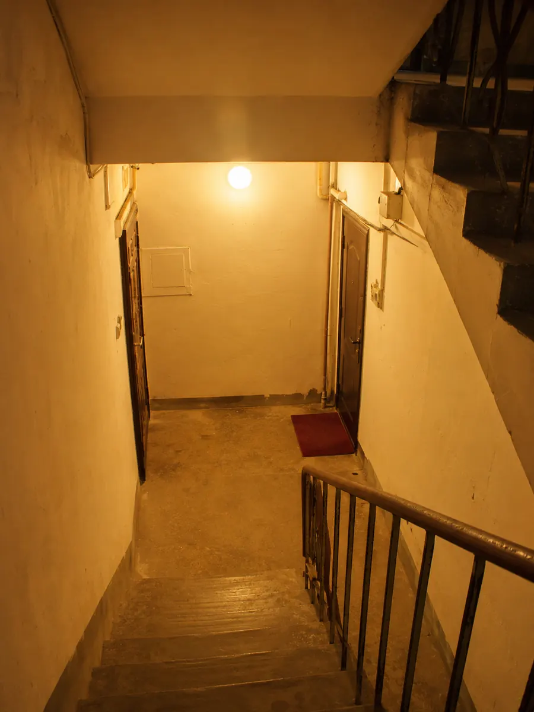
37栋老楼、148个“黑楼道”让2000多户居民不必再摸黑上楼。
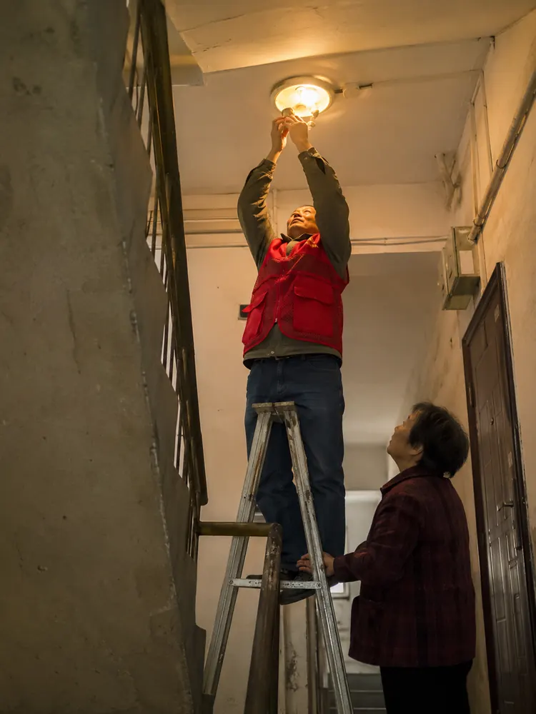
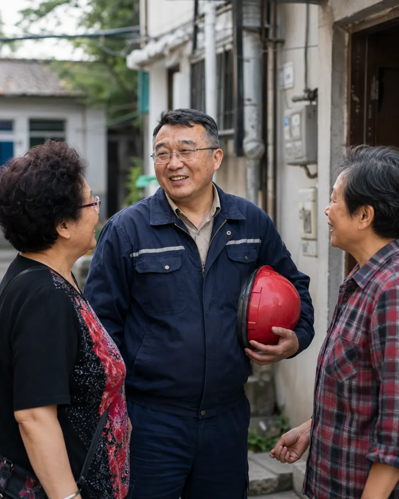
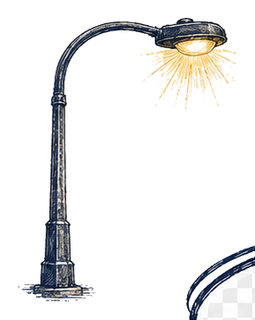
一盏灯亮起来之后，故事并不会停在一个人身上。真正留下来的，是更多人开始沿着这条路继续往前走。
档案 06｜六、一个人之后
更多人跟着出发
真正重要的，从来不只是一个人做了多少事，而是这些经验后来有没有留下来。
张黎明把手绘线路图变成了方法，把案例库变成了班组共用的工具，也把创新变成了更多人能接上的工作。创新阵地后来培育出63个创新工作室、2000余名“电力创客”“蓝领创客”；以他名字命名的共产党员服务队，发展为30个分队、400多名队员组成的常态化志愿服务组织。另一组更具体的数据也说明了这件事：近三年来，公司先后有58人次获得省部级以上劳动模范和五一劳动奖章等荣誉，2700多人次提升了技能等级。最初只画在他笔记本上的那张“抢修地图”，后来慢慢变成了更多人的工作方法。
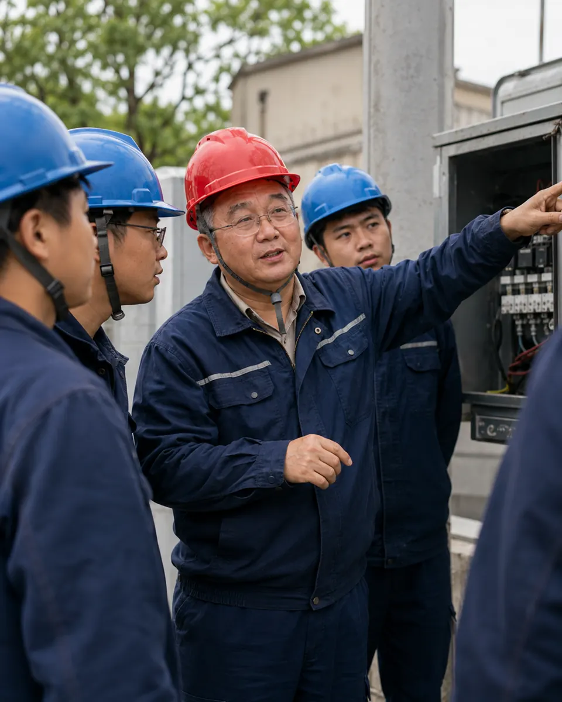
经验扩散链：线路图、案例库、刀闸改造、机器人研发、服务队、创新工作室、电力创客与技能提升。
关键词云把一个人的经验，拆成更多能被看见的词
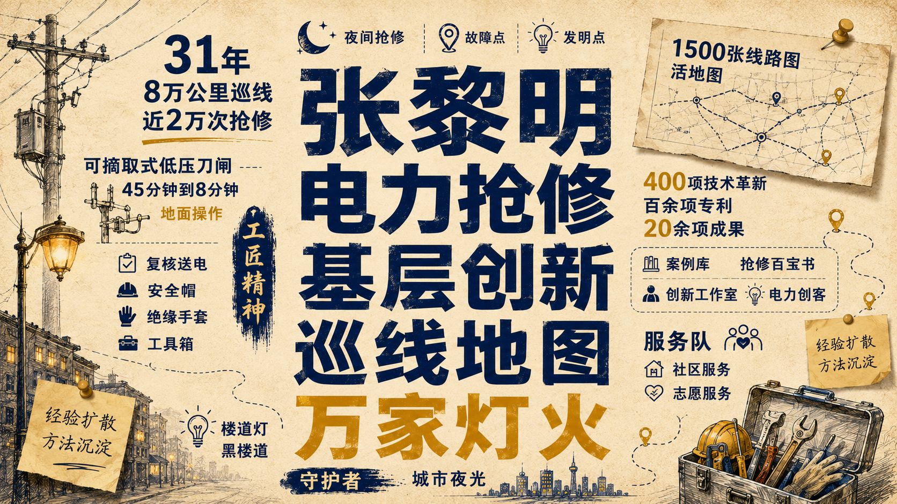
一盏灯亮起，是一次抢修的结束。也是下一次改造的起点。张黎明的故事并不抽象。它让人看见一条很具体的路径：先把路走熟，再把问题记下；先把工具改好，再把经验留下；最后，让更多人沿着这条路继续往前走。
灯亮之前，他在路上。灯亮之后，这条路没有停。